Essential Commands: The Linux File System Structure
Why the file system structure exists
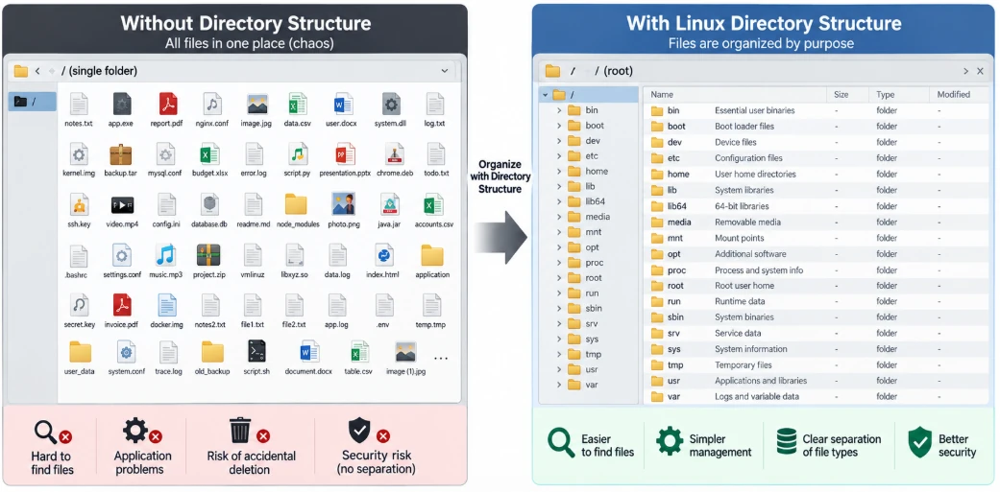
A Linux machine holds very different kinds of files:
System files
The core code that keeps the operating system running.
User files
Your documents, pictures and downloads.
Applications
The software programs you install to do work.
Configuration files
Text settings that tell apps exactly how to behave.
Log files
Background records of what the computer has done, such as error reports.
Dropped into one giant messy folder, this would be a disaster:
| Problem | Why |
|---|---|
| The OS slows down or crashes | It can’t find the exact file it needs to run a command. |
| Apps break | Programs don’t know where to look for their settings and tools. |
| Security fails | Personal files sit next to critical system files, so a normal user (or a virus) could delete something the kernel needs. |
The directory hierarchy
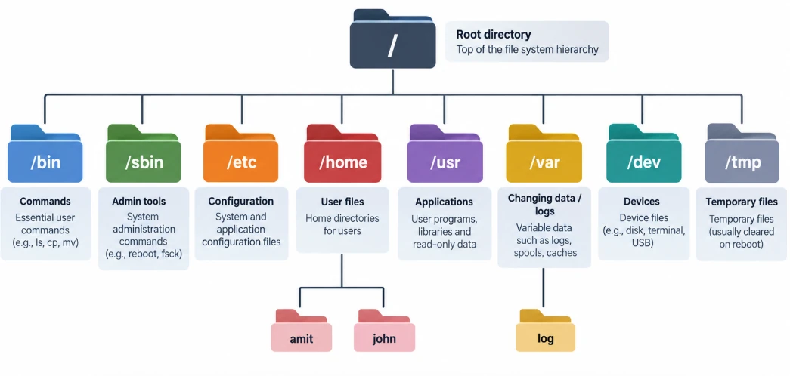
So Linux never lets files sit wherever they like. Everything lives in a strict, predictable, tree-shaped hierarchy where each file has a home based on what it does: critical system files locked away in one area, user files in their own personal space, temporary files and logs in their own “record rooms”. This layout is the Linux file system structure.
What is a file system?
A file system is the logic Linux uses to store, organise and find data on a disk. Without it, your data would be an unreadable blob of 1s and 0s.
The golden rule: “everything is a file”
Where Windows treats hardware and settings as special hidden objects, Linux handles almost everything the same way:
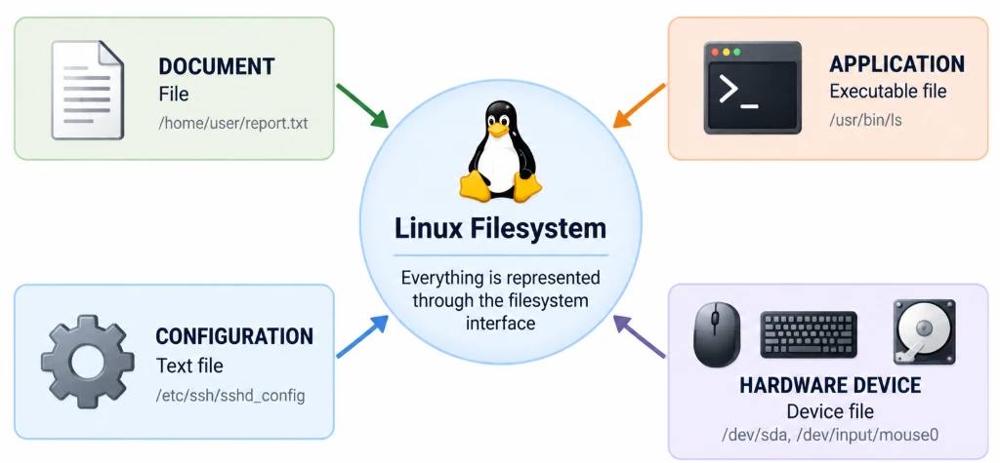
Your documents?
Files.
Your programs?
Files.
System settings?
Plain text files.
Even hardware?
Your mouse, keyboard and disks appear as special files (in /dev) that Linux reads from and writes to.
The upside-down tree
To sort all those files Linux uses one hierarchical tree that grows upside down. There are no C: or D: drives as in Windows. Everything starts from one single point: the root directory, written /. Every file, folder and device branches out from it.
The root directory (/), and the /root trap
If the file system is an upside-down tree, the root directory is the seed everything grows from. It is the absolute top of the computer: nothing is above or outside it.
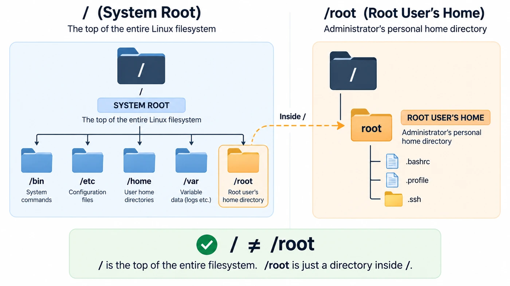
/ is the whole building. /root is just one locked room inside it./ · the system root
The top level of the entire computer: the container that holds everything.
/root · the superuser’s home
An ordinary folder inside /: the private, locked bedroom of the root user (the administrator). Regular users can’t enter.
/ with /root Deleting or misconfiguring the wrong one has very different, and very differently sized, consequences. A mistake on / can wipe the whole system.The map of the system: critical directories
Now let’s open the most important “rooms” in the warehouse. Each has a strict purpose.
| Directory | Nickname | Purpose |
|---|---|---|
/bin | User binaries (toolbelt) | Basic everyday commands such as ls, cp, mv for regular users. |
/sbin | System binaries (admin toolbelt) | Powerful admin commands for configuring the system, formatting disks or rebooting. |
/etc | Configuration | Text configuration files, the “settings menu” of Linux. No programs here. |
/var | Variable data | Data that changes constantly: logs, caches, mail, print queues. |
/home | User directories | A personal folder for every user, e.g. /home/alex. |
/usr | User system resources | Installed software and applications, similar to “Program Files” on Windows. |
/dev | Device files | Hardware such as mouse, keyboard and disks, represented as files. |
/tmp | Temporary files | A scratchpad for apps; usually cleared at reboot. |
The next four sections go deeper into the directories you’ll use most: /bin, /etc, /home and /var.
/bin and /sbin are links to /usr/bin and /usr/sbin (the “merged /usr”). The roles stay the same; the files just physically live under /usr./bin · the essential toolbelt
Full form: binaries. In Linux, a binary is simply an executable program. /bin is the computer’s basic toolbelt: the everyday commands you, and the OS itself, need to operate the machine.
ls
List files.
cp
Copy files.
mv
Move or rename files.
rm
Remove (delete) files.
mkdir
Make a new directory.
The magic behind commands: ls feels like a magic word, but it is a real program file. The shell searches the folders in your PATH, finds the ls program in the bin directory, and runs it:
ls -l /bin/ls-rwxr-xr-x 1 root root 138216 Feb 8 2024 /bin/lsWhy /bin matters: the survival kit
- 1No basic commandsWithout it, the terminal is useless: you couldn’t even list files (
ls) or read one (cat). - 2System failureThe OS uses these same commands behind the scenes to keep running.
- 3Crucial for recoveryWhen a broken system boots into recovery mode, only the bare minimum loads. The essential tools stay available so an admin can fix things.
/etc · the settings and rulebooks
Name: from “et cetera” (people sometimes remember it as “editable text configuration”). If /bin is the toolbelt, /etc is the control room. Where Windows and macOS have a graphical Control Panel, Linux keeps every setting as a simple text file in /etc, for the OS, your apps and background services.
| File | Nickname | Holds |
|---|---|---|
/etc/passwd | the guestbook | The list of every user account on the machine. |
/etc/hostname | the name tag | The machine’s name on the network. |
/etc/network | the internet rules | Settings for connecting to networks (newer Ubuntu uses /etc/netplan). |
cat /etc/hostnameip-172-31-8-5In action: because everything is a file, there’s no special “rename computer” button. Open /etc/hostname, replace the old name, save, and you’ve changed the setting.
Why /etc matters: the master rulebook
If a company lost all its employee records and rulebooks overnight, nobody would know what to do. Linux without /etc is the same. It controls:
System behaviour
How the OS boots, its time zone, and the rules it follows.
Application behaviour
Installed software reads its settings and preferences here.
Network settings
Addresses and configuration to talk to the internet and other machines.
/etc: an nginx site in /etc/nginx/, a service unit in /etc/systemd/system/, an entry in /etc/hosts. Always copy the file first (sudo cp file file.bak) before you change it./home · the personal workspaces
If /bin is the toolbelt and /etc the rulebook, /home is the apartment building for the people using the computer. Linux is multi-user, so each user gets a private folder inside /home. If Amit and John share a machine:
/home/amit/file.txt unless Amit or root allows it./home
├── amit
└── johnInside your own home folder (e.g. /home/amit) you have total control: no admin rights needed to create or delete things. Your documents, spreadsheets, downloads, pictures and personal app settings live here.
Security and ownership: a file saved as /home/amit/file.txt belongs to Amit. John can’t open, edit or delete it unless Amit, or the root user, grants permission.
Why /home matters: the privacy wall
- 1Stores user data safelyPersonal files stay separate from the OS. If the OS must be reinstalled,
/homecan be kept untouched. - 2Keeps users separatedOn a shared server, locked “apartment doors” stop users snooping in each other’s files.
- 3Provides a personal workspaceCreate folders, keep local scripts and change your settings without root’s permission, and without risking system files while cleaning up downloads.
/var · the system diary
Full form: variable. Most files so far stay the same unless you change them. Files in /var grow, shrink and change on their own while the computer runs. It is the system’s filing cabinet of diaries.
System logs
The historical record of everything the computer does.
Cache
Temporary data apps keep so they load faster next time.
Incoming and outgoing email on a mail server.
Print spools
Documents waiting in line to be printed.
The most important folder is /var/log. Whenever something happens, good or bad, the system writes it down here:
| Log file (Ubuntu/Debian) | On RHEL/CentOS | What it records |
|---|---|---|
/var/log/syslog | /var/log/messages | The master diary: general system activity, hardware events, software messages. |
/var/log/auth.log | /var/log/secure | The security guard’s logbook: every login and password attempt, including failures. |
sudo tail -n 3 /var/log/auth.logSep 7 10:02:11 ip-172-31-8-5 sshd[1180]: Accepted publickey for ubuntu from 49.36.10.22 port 51234 ssh2
Sep 7 10:02:11 ip-172-31-8-5 sshd[1180]: pam_unix(sshd:session): session opened for user ubuntu
Sep 7 10:05:40 ip-172-31-8-5 sudo: ubuntu : TTY=pts/0 ; PWD=/home/ubuntu ; USER=root ; COMMAND=/usr/bin/tail -n 3 /var/log/auth.logWhy /var matters: the flight recorder
Like an aircraft’s black box, /var doesn’t forget. When a server crashes, an app won’t start, or someone guesses passwords, the event is written down. It provides:
- 1System and application logsA second-by-second history of what was happening right before a problem.
- 2Runtime dataThe live, changing data programs need right now, such as a database saving new records.
- 3The ultimate troubleshooting toolWhen something breaks, an admin’s first move is to open the logs in
/var/log: the detective’s notebook.
/var grows by itself, runaway logs are a classic cause of a “disk full” outage. Keep an eye on it with du -sh /var/log.How Linux uses the file system: real-world flows
A map is useful; now watch the OS travel through these folders to get real work done.
1 · Running a command (ls)
2 · Logging in
Linux doesn’t guess. It looks the user up in the rulebook directory. (The account list is in /etc/passwd; the password hashes are kept in the root-only file /etc/shadow.)
3 · Keeping records
The system quietly writes the exact second it happened so an admin can investigate later.
4 · Saving a file
Your document goes straight into your personal, protected workspace.
Navigation and the idea of a path
Knowing a library has a catalogue system is one thing; walking to the right shelf is another. A typical Linux system has thousands of directories (shelves) and millions of files (books), split between system areas (the engine room) and user areas (your workspace).
In a GUI you click and see where you are. In a terminal you are “standing in the dark”. Without navigation skills you are lost (can’t find your documents), stuck (can’t reach the folder where a program must run), powerless (can’t reach settings files) and slow. Navigation lets you move your “current position” anywhere in the tree in a split second, making you the pilot, not a passenger.
A path is an address
A path is the address of a file or folder. Like a postal address, it goes from the biggest area to the smallest:
Read the slash as “inside”: /home/ubuntu means “start at root, go inside home, then inside ubuntu”.
- A full path is unique. Two files can share a name such as
notes.txtas long as they live in different folders, just as two streets in different cities can have a house number 12. - The first slash matters. A leading
/always means root; later slashes just separate folder names.
Absolute vs relative paths
Absolute path · the full address
Always starts with / (“ground zero”): start at the very top and follow these exact steps.
/home/ubuntu/Documents/file.txt
Complete (every folder listed), unambiguous (same for every user), direct (no guessing).
Relative path · local directions
Never starts with /. It starts from where you are standing now.
From /home/ubuntu: Documents/file.txt
Fast to type, efficient inside a project, and flexible: move a whole project folder and the paths inside it still work.
The “works from anywhere” rule
You’re deep in the record room at /var/log and need /home/ubuntu/file.txt. Because the target starts with /, Linux jumps straight to the root and follows the map; no walking back out folder by folder. That’s why admins love absolute paths:
No confusion
The computer never guesses where you are.
Reliability
A backup script with absolute paths works no matter which folder it runs from.
Safety
You won’t act on a same-named file in the wrong folder.
| Feature | Absolute path | Relative path |
|---|---|---|
| Starting point | Always starts with / | Starts with a folder or file name |
| Address type | Full location (global) | Partial location (local) |
| Reliability | Works from anywhere | Works only from your current folder |
| Typing effort | Usually longer | Shorter and faster |
| Example | /home/ubuntu/file.txt | file.txt |
pwd and cd: where am I, and how do I move?
pwd · your compass
Print Working Directory prints the absolute path of where you stand right now. (It’s a shell built-in; a /bin/pwd program also exists.)
pwd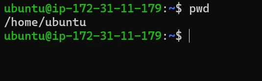
pwd prints the absolute path of where you stand.The output /home/ubuntu is your current working directory: here, the home folder of the ubuntu user, the default location where that user’s personal files and data are stored.
Confirmation
Before deleting or moving, check you’re not in /etc when you thought you were in /tmp.
Path finding
Copy the exact path when a program needs it.
Orientation
Usually the first command after logging in to a server.
cd · the teleporter
Change Directory: the terminal’s version of double-clicking a folder. Give it an absolute path to jump anywhere:
cd /var/log
pwd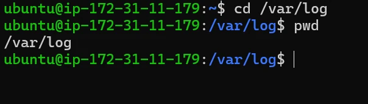
~ to /var/log.Before the command, the current directory was /home/ubuntu (the ubuntu user’s home). After cd /var/log, you have moved straight from your home folder to the system’s log directory.
Or a relative path to step into a folder right in front of you:
pwd # /home/ubuntu
ls
cd Documents/ # or: cd Documents
pwd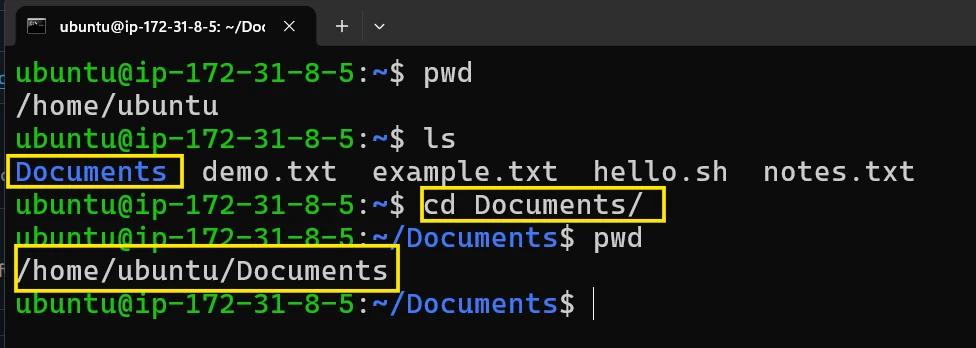
Documents was right in front of you, so a relative path was enough.ls shows the files (demo.txt, example.txt, hello.sh, notes.txt) and the directory (Documents) inside /home/ubuntu. Then cd Documents/ moves into it, and the new working directory becomes /home/ubuntu/Documents.
The cd shortcuts
/var/log. cd - returns to wherever you were before.Typing long paths gets tiring, so Linux has special symbols that work like teleporter buttons.
cd · the “go home” button
Lost deep in the system? Plain cd takes you straight back to your home directory.
cd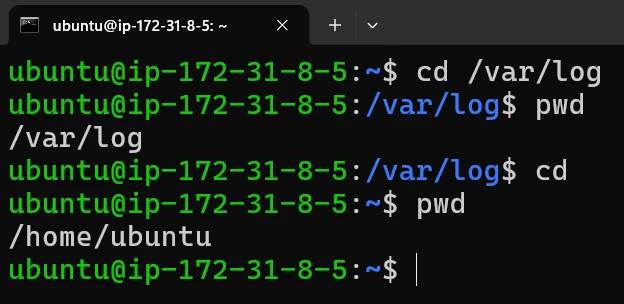
cd alone: from /var/log back to /home/ubuntu.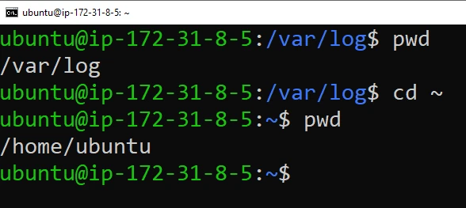
cd ~ does exactly the same job.cd .. · the “move up” shortcut
The double dot .. is the parent directory, like the “Up” arrow in a file explorer. From /home/ubuntu/Documents, cd .. moves you up to /home/ubuntu.
cd ..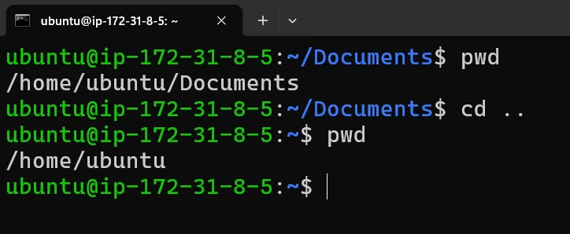
Documents to its parent.cd - · the “back” button
Jumped somewhere and forgot something in the last folder? The dash takes you back to the previous directory, just like a browser’s Back button. It also prints where it took you.
cd -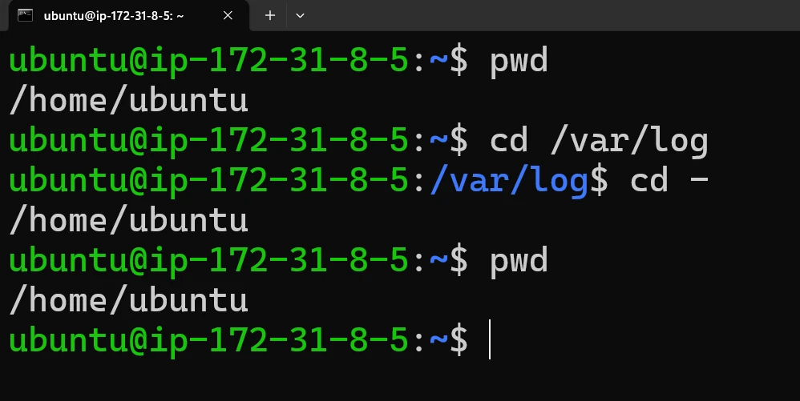
/var/log, cd - returns to /home/ubuntu, the folder you came from.cd / · the root jump
To go all the way to the very start of the whole system:
cd /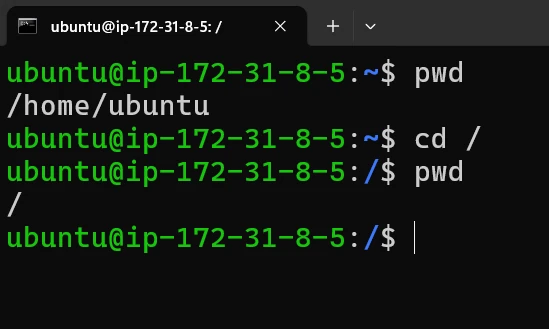
/: you are at the root.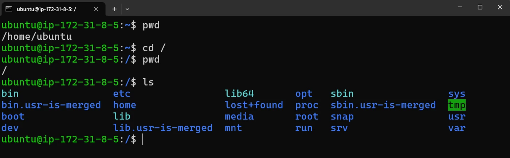
ls at the root shows the main branches: bin, etc, home, var…cd / takes you to the root directory (/). From here you can see the main branches such as bin, etc and var.
| Command | Takes you to | Think of it as |
|---|---|---|
cd or cd ~ | Your home folder | “Go to my room” |
cd .. | The folder above you (parent) | “Go out to the hallway” |
cd - | The last folder you were in | “Go back” (like a browser’s Back button) |
cd / | The root of the whole system | “Go to the front door” |
cd .. vs cd - From /var/log, cd .. goes up to /var. cd - goes back to wherever you were before (e.g. /home/ubuntu). And keep the space: cd - and cd /, not cd- or cd/.ls · the eyes of the system
Walking into a room with cd doesn’t show you what’s inside. ls (list) is turning on the lights: “show me the files and folders here.”
ls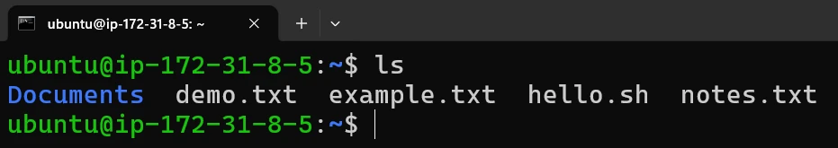
Documents is blue; plain files are white.Discovery
The first thing you do in a new folder: what can I edit, which folders can I enter?
Verification
After creating or moving something, check it landed where it should.
Differentiation
Most terminals colour-code output: blue for folders, plain for files.
Option flags: filters for your eyes
ls -l · the detailed view. Long listing: the whole biography of each file.
ls -l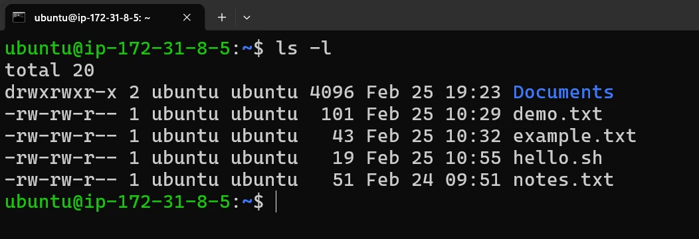
Type and permissions: d = directory, - = file; who can read, write, run.
Owner: the user who owns it (then the group).
Size in bytes.
Last modified date and time.
Name.
ls -a · the detective view. Shows all files, including hidden ones. Any name starting with a dot (.) is hidden from a normal ls.
ls -a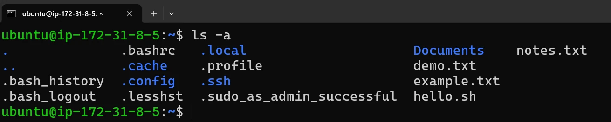
-a.You always see . (this folder) and .. (the parent). Hidden config files like .bashrc live here.
ls -lh · the human-friendly view. -l shows sizes in bytes (like 5423872); -h turns them into K, M, G.
ls -lh
ls -l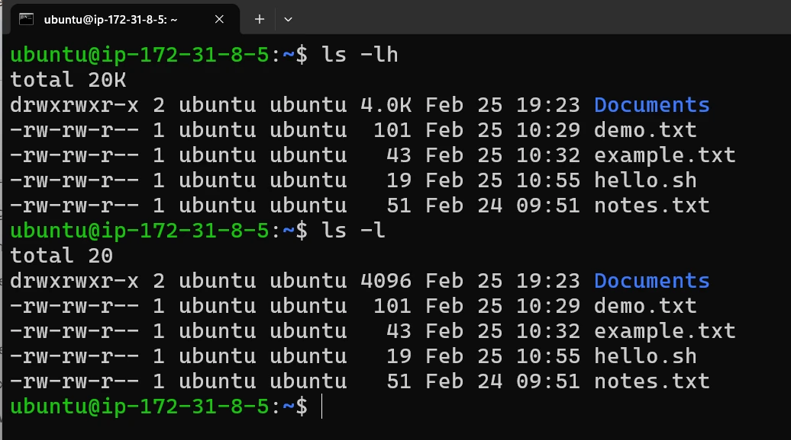
-lh prints 4.0K where -l prints 4096.ls -R · the X-ray view. Recursive: lists every sub-folder’s contents too, the whole family tree at once.
ls -R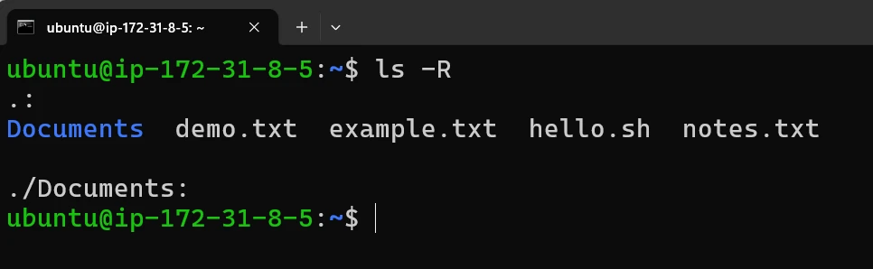
-R also opened ./Documents, which is empty here.Combining options: ls -lah
The professionals’ favourite, combining -l (long), -a (all) and -h (human sizes) in one go:
ls -lah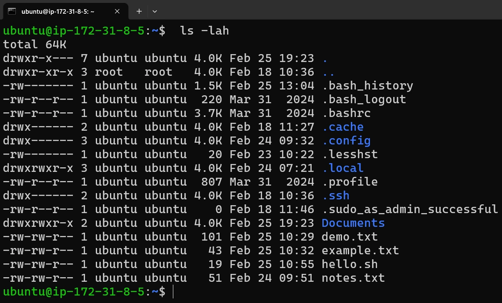
- 1SpeedA full 360° view of the folder in one second.
- 2ClarityHidden config files like
.bash_historynext to normal files, with readable sizes. - 3TroubleshootingApp misbehaving? Instantly check that its hidden settings file exists and its size looks right.
history and the ! shortcuts
history is your digital logbook: a numbered list of commands you have typed. Bash saves it in ~/.bash_history, so it includes earlier sessions too.
history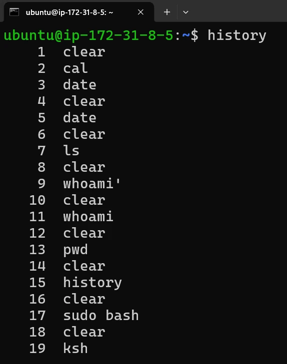
date.Recall
Find yesterday’s complicated command without remembering its spelling.
Learning
Review the steps you took to solve a problem.
Redo
See each command’s ID number to run it again.
Repeating commands with !
The exclamation mark (“bang”) is Bash’s history expansion: it grabs a past command and runs it again. Bash first prints the command it expanded to.
!3 · run command number 3 again
!3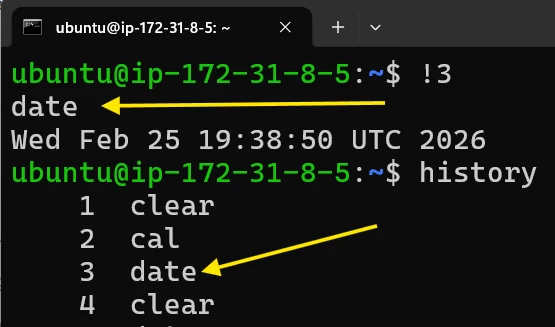
!3 re-ran command #3, date, without retyping it.!! · do the last command again
ls
!!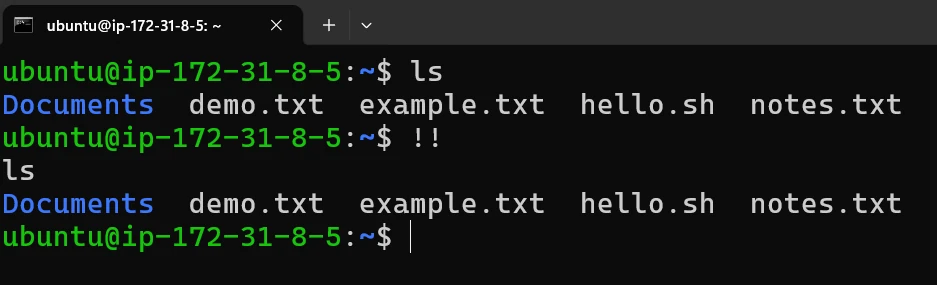
!! repeated the last command, ls.Why use it? Ever typed a long command and realised you forgot sudo (admin rights)? Instead of retyping it, just type sudo !!.
!string · rerun the most recent command starting with those letters
!lsExample: you ran ls -lah twenty minutes ago and want it again. !ls searches back through your history, finds the last command starting with ls, and runs it.
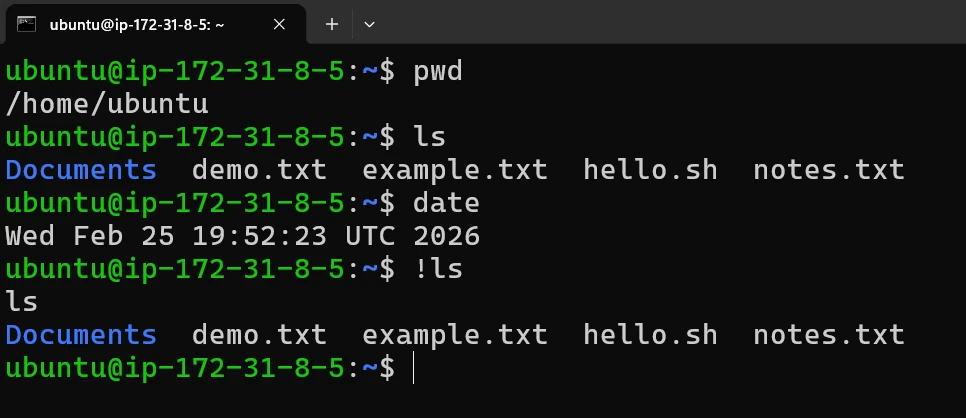
date ran in between, but !ls skipped back to the last ls.| Shortcut | What it does | Good for |
|---|---|---|
!! | Repeats the last command | Fixing mistakes, e.g. sudo !! |
!3 | Repeats command #3 from history | Running a specific complex command again |
!ls | Repeats the last command starting with ls | Quickly seeing your files again |
!rm reruns your last rm command, whatever it deleted. On a server, prefer ↑ to see the command before running it.Special symbols: ., .. and ~
. · right here
The current directory. ls . is the same as ls. Essential for running a program in the current folder: ./my_program.
.. · one level up
The parent directory. From /home/ubuntu, cd .. takes you to /home. Chain them: cd ../.. goes up two levels.
~ · home base
Your home folder (e.g. /home/ubuntu). cd ~ always takes you home; ls ~/Documents instead of ls /home/ubuntu/Documents.
Certain symbols have “magical” meanings: they are placeholders, so you don’t have to remember or type long folder names. You can spot both dots in any ls -a listing:
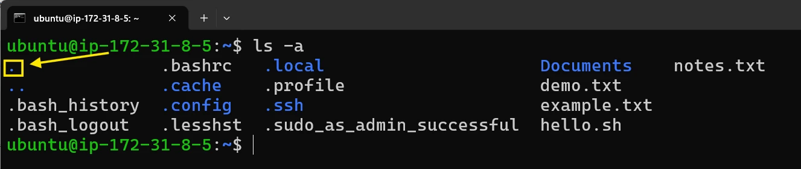
. is the folder you are standing in.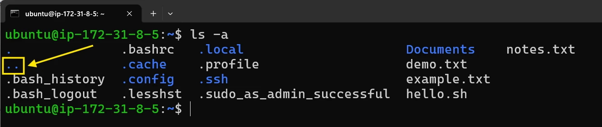
.. is the folder that contains it.Chain the double dots to climb several levels at once:
cd ../..
pwd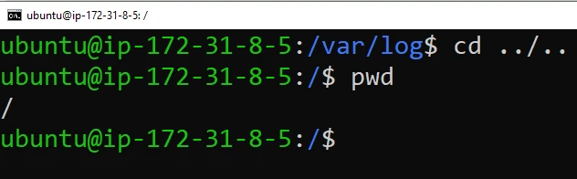
/var/log, cd ../.. climbs two levels to the root /.And the tilde is always your home base. The prompt even shows it: after cd brings you home, the path part of the prompt is just ~.
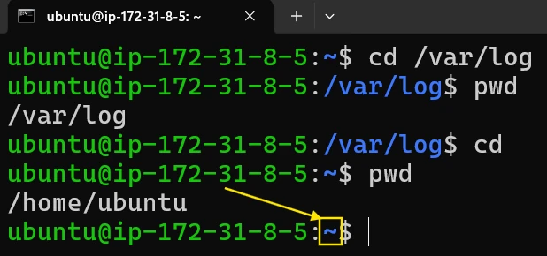
~ in the prompt means “you are in your home folder”.Key terms
- File system
- The logic Linux uses to store, organise and find data on disk, arranged as one directory tree.
- Root directory (/)
- The single top of the Linux directory tree; every file, folder and device lives somewhere beneath it.
- /root
- The home directory of the root (administrator) user; just one folder inside
/, not the top of the system. - /bin
- The directory of essential user commands (binaries) such as
ls,cpandmv. - /etc
- The directory of text configuration files for the system, services and applications, e.g.
/etc/passwdand/etc/hostname. - /home
- The parent of every regular user’s personal folder, such as
/home/ubuntu. - /var
- The directory for constantly changing data: logs in
/var/log, caches, mail and spools. - Path
- The address of a file or folder in the tree, with folder names separated by
/. - Absolute path
- A path that starts with
/and gives the full location from the root, so it works from anywhere. - Relative path
- A path that does not start with
/and is resolved from your current working directory. - Working directory
- The folder you are currently “standing in”; shown by
pwdand changed withcd. - Hidden file
- A file whose name starts with a dot (e.g.
.bashrc); shown only withls -a. - Parent directory (..)
- The folder that contains the current folder;
cd ..moves up one level. - Tilde (~)
- Shorthand for your home directory, such as
/home/ubuntu. - History expansion (!)
- Bash shortcuts like
!!,!3and!lsthat rerun commands from your history.
Self-check
Pick an answer. You’ll see right away whether it’s correct and why.
What is the difference between / and /root?
- They are the same directory
/is the top of the whole system;/rootis the root user’s home folder inside it/rootcontains//is only for the root user
/ holds everything. /root is one locked folder within it.
An app on a customer server keeps crashing. Where do you look first for clues?
/bin/home/var/log/dev
/var/log is the system’s flight recorder: the history of what happened just before the failure.
You want to change the machine’s name. Which directory holds that setting?
/etc/var/tmp/usr
Configuration lives in /etc; the name is in /etc/hostname.
Which of these is a relative path?
/home/ubuntu/notes.txt/var/log/Documents/notes.txt
Relative paths don’t start with /; they’re resolved from your current folder.
You go from /home/ubuntu to /var/log. Where does cd - take you?
/var/home/ubuntu//root
cd - goes back to the previous directory. cd .. would have gone up to /var.
You suspect a hidden .env file exists but ls doesn’t show it. Which command reveals it with readable sizes?
ls -Rls -lls -lahls -h
-a shows dot-files, -l the details, and -h human-readable sizes.
Your backup script runs from different folders each night. Which paths should it use?
- Absolute paths
- Relative paths
- Only
~ - Only
..
Absolute paths work the same no matter where the script runs from.
apt update failed with “Permission denied”. Quickest fix?
!apthistorycd /sudo !!
!! expands to the last command, so sudo !! reruns it with admin rights.
John tries to open /home/amit/file.txt. What happens by default?
- It opens normally
- He is denied unless Amit or root grants permission
- The file is deleted
- Linux copies it to /home/john
Each user’s home is private; ownership and permissions keep other users out.
All of it, in one sentence
Linux keeps everything in one upside-down tree from /: commands in /bin, settings in /etc, people in /home, diaries in /var, and you move through it with absolute or relative paths using pwd, cd, ls and history.
— Vishwa Mohan